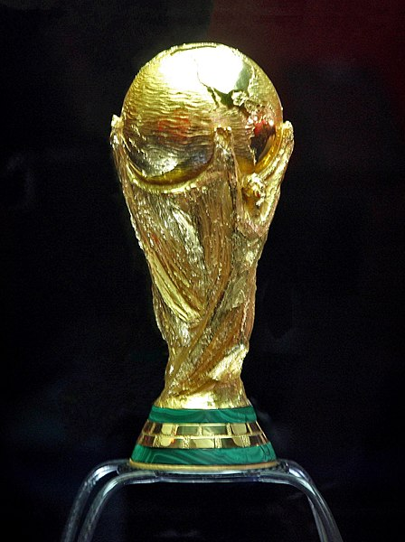

Santos fc em Finais de Copas do mundo

Jogadores do Santos que fizeram história em finais de Copas do mundo.
Santos fc tem 5 Gols e 2 assistências em finais de Copas do mundo.
Pelé na final da copa do mundo de 1958 na época jogador do Santos :
Pelé foi convocado para a Copa do Mundo de 58 e fez 6 Gols naquela copa, sendo 2 na final e ajudou a seleção a ganhar a copa do mundo pela primeira vez.
Zito na Final da Copa do Mundo de 1962 na época jogador do Santos :
Zito fez 1 Gol na final da Copa do mundo de 1962 e ajudou a seleção a ser bicampeã do mundo.
Pelé na final da Copa do mundo de 1970 na época jogador do Santos :
Pelé na final da Copa de 1970 fez 1 Gol e deu 2 assistências, além de ter feito 4 gols e 7 assistências na copa inteira e ajudou a seleção a ser tricampeã do mundo.
Carlos Alberto Torres na final da copa de 1970 na época jogador do Santos :
Na final da copa de 1970 Carlos Alberto torres fez o gol dele e ajudou a seleção a ser Tricampeã do mundo.
Click aqui para voltar para a pagina principal.